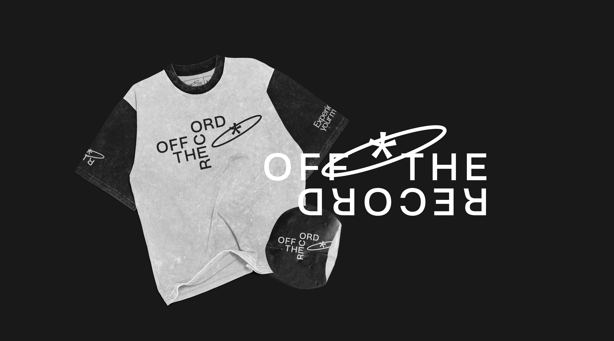

OFF THE RECORD
BRAND IDENTITY AND POSTERS
This is a concept brand identity created for Off The Record, a local vinyl shop that curates and sells vinyls, CDs, DVDs and mixtapes. The brand is edgy, fresh and cultured and this is emphasized through the muted color palette, grunge textures and logo arrangements.
